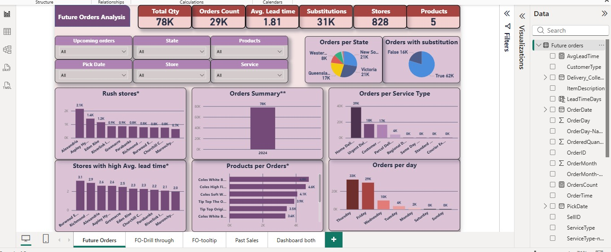
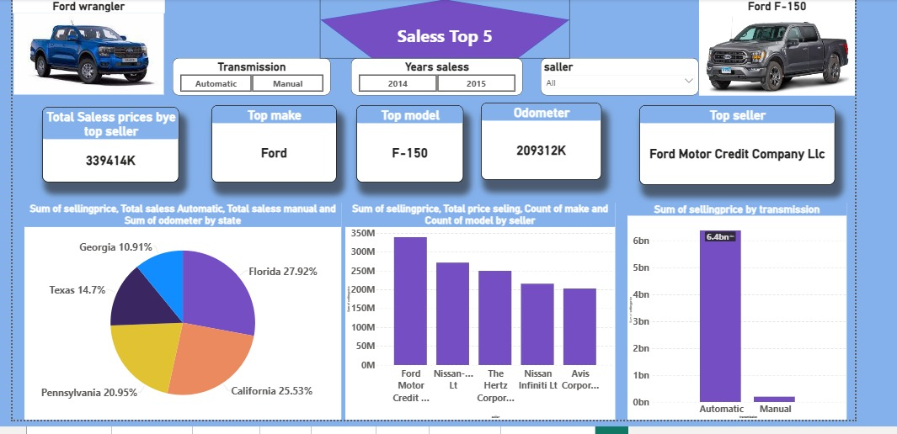
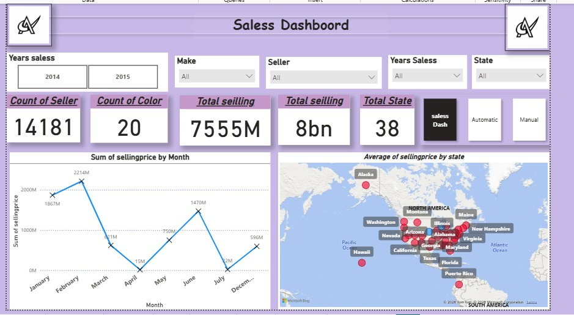

📈 Comprehensive Business Dashboard
End-to-end business intelligence solution for executive decision making
Dashboard Preview

Repository
View on GitHub
Key Metrics
Sales, Profit, Inventory, KPIs
Time Period
Multi-year analysis
Business Challenge
The organization lacked a centralized view of business performance across sales, inventory, and finance. Decision-makers relied on disparate Excel reports leading to delayed insights and missed opportunities.
Solution & Methodology
- Connected and transformed data from multiple sources using Power Query (sales, inventory, financial tables)
- Built a star schema data model with fact and dimension tables for optimal performance
- Created 20+ DAX measures including YTD, MoM growth, moving averages, and variance analysis
- Designed interactive visuals with drill-through pages for detailed analysis by product category and region
- Implemented row-level security (RLS) for role-based access (managers see only their regions)
Key Dashboard Features
Sales Performance
Revenue trends, top products, regional breakdown
Inventory Analysis
Stock levels, turnover ratios, reorder alerts
Financial KPIs
Gross margin, operating expenses, profit analysis
Time Intelligence
YoY, QoQ, MoM comparisons with forecasting
Business Impact
35%
Reduction in reporting time
Real-time
Data refresh daily
Single
Source of Truth
👥 HR Analytics Dashboard
Workforce analytics to reduce attrition and optimize talent management
Dashboard Preview

Repository
View on GitHub
Focus
Attrition & Recruitment
Key Metrics
Retention, Satisfaction, Headcount
Business Challenge
High employee turnover and lack of visibility into attrition drivers. HR team needed data-driven insights to improve retention strategies and recruitment efficiency.
Solution & Methodology
- Cleaned and merged employee data, performance reviews, and exit interviews using Power Query
- Built DAX measures for attrition rate, average tenure, hiring funnel conversion, and satisfaction scores
- Created department-level KPIs with trend analysis over 3 years
- Designed what-if parameters to simulate retention program impact
Key Dashboard Features
📊 Attrition Analysis
By department, role, age group, tenure
🎯 Recruitment Funnel
Applications → Interviews → Hires
⭐ Employee Satisfaction
Survey scores by team and manager
💰 Cost of Turnover
Financial impact of attrition
Business Impact
15%
Reduction in attrition
30%
Faster hiring process
↑22%
Employee satisfaction
🥐 Bakery Sales Analytics
Sales performance optimization for multi-branch bakery chain
Dashboard Preview

Assets
Dashboard + Data Cleaning Script
Focus
Sales Trends & Product Performance
📋 Business Challenge
Bakery chain with multiple locations lacked visibility into peak hours, best-selling products, and underperforming stores. Manual Excel reporting was time-consuming and error-prone.
⚙️ Technical Approach
- Extracted and cleaned transaction data using Power Query (removed duplicates, handled nulls, standardized date/time formats)
- Created calculated columns for hour of day, day of week, and product categories
- Built DAX measures for average order value, hourly sales velocity, and cannibalization analysis
- Designed mobile-responsive dashboard for store managers
📸 Visual Assets
📈 Business Impact
20%
Sales increase (peak hours)
40%
Faster reporting
🚗 Car Sales Dashboard
Dealership performance & inventory optimization
Dashboard Overview Page

Data Model Page

Core Tools
Power BI, Power Query, DAX
Key Performance Indicators
Total Sales, Sellers, Top Make
Data Architecture
Star Schema Model Map
Business Challenge & Overview
An automotive dealership group required a centralized business intelligence solution to track comprehensive sales performance across multiple branches, sellers, and models. The core challenge involved transforming raw, unoptimized transactional records into deep analytical insights to identify peak selling periods, streamline inventory management, minimize carrying costs, and identify top-performing vehicle brands.
Technical Methodology & Tools Used
- Data Ingestion & ETL (Power Query): Cleaned raw dealership data by removing duplicates, managing null values, standardizing date-time formats, and partitioning metadata for seamless model integration.
- Data Architecture & Modeling: Structured a high-performance Star Schema by establishing robust relational connections between fact sales tables and key dimension tables (Time, Vehicle Attributes, Sellers, and Locations).
- Advanced Analytics (DAX Formulas): Engineered custom calculated columns and complex measures to extract high-level KPIs including seller distributions, brand market shares, totals, and historical monthly sales velocity.
- Geographic & Visual Design: integrated Bing Maps API for real-time visual exploration of geographic sales distribution alongside multi-page navigation.
Key Dashboard Features Explained
Sales Overview Page
Tracks macro performance including total sellers ($14,181$), extensive color varieties ($20$), total volume ($7,555\text{M}$), and a historical line graph showing monthly trends with sharp surges in February and June.
Top Performers & Market Share
Identifies the highest-selling manufacturer (Ford), leading model (F-150), and geographic market distributions via breakdown charts highlighting massive regional shares (e.g., Florida at $27.92\%$).
Core Business Logic
Isolates transmission preferences showing automatic dominance over manual vehicles, and compares seller performances showing corporate leaders like Ford Motor Credit Company.
Multi-Dimensional Slicers
Empowers managers with cross-filtering components to instantly slice data views by year, specific state locations, vehicle makes, and individual dealership networks.
Measurable Business Impact
12%
Increase in Inventory Turnover
25%
Reduction in Reporting Time
Data-Driven
Procurement & Campaign Focus